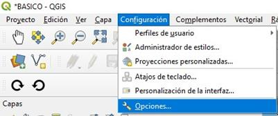
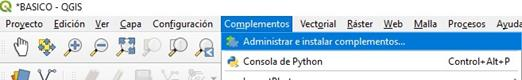
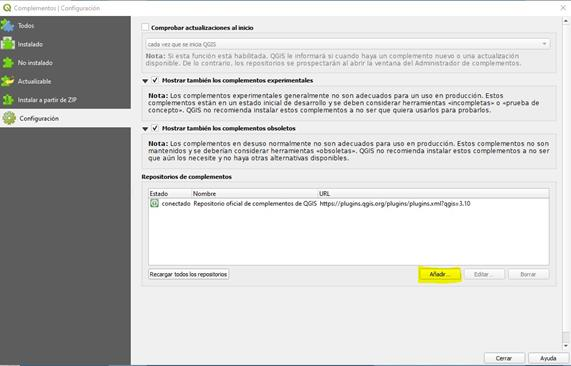
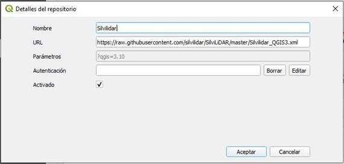
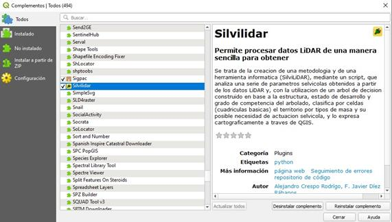
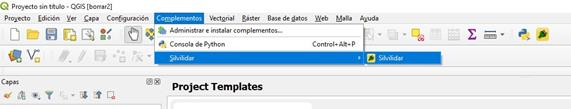

Es necesario tener instalado en C:\FUSION el programa FUSION desarrollado por US
Puede descargarse desde http://forsys.cfr.washington.edu/FUSION/fusionlatest.html
Para trabajar con archivos LAZ requiere LAStools que puede ser descargado desde http://rapidlasso.com/lastools/y posteriormente, una vez descomprimido copiar el archivo LASzip.dll en la carpeta de instalación de FUSION.
Es necesario tener instalado Qgis 3, preferiblemente la versión a largo plazo(más estable).LTR
Puede descargarse desde https://www.qgis.org/es/site/forusers/download.html
El complemento asume que las capas creadas están en el sistema de referencia del proyecto. Para que esto suceda hay que decir al QGIS que las capas nuevas usen el SRC del proyecto.

Silvilidar está disponible en forma de complemento en su propio repositorio.
Para instalarlo hay que ir al menú complementos y a continuación a Administrar e instalar complementos

Y ahí a Configuración y Añadir.

Y ahí pondremos en nombre Silvilidar y en url: https://raw.githubusercontent.com/silvilidar/SilviLiDAR/master/Silvilidar_QGIS3.xml

A continuación en Todos ya aparecerá Silvilidar como un complemento no instalado, por lo que sólo queda pulsar en instalar complemento.

Y ahora aparece como instalado.

Nos aparece entonces un botón con forma de enchufe como barra de herramientas y también en el menú complementos, Silvilidar.
